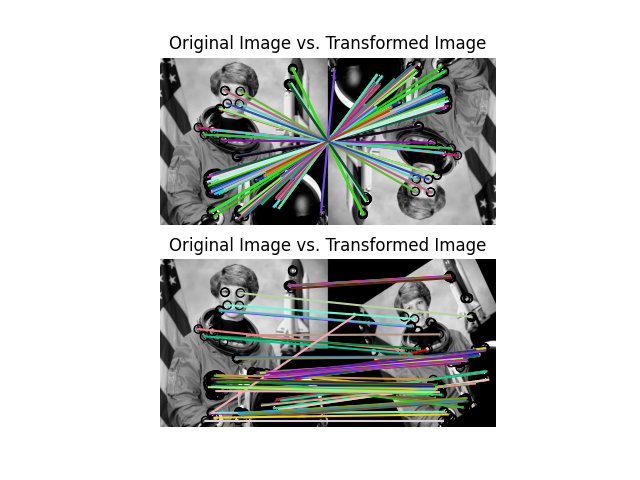

Source
SourceNote
Click here to download the full example code or to run this example in your browser via Binder
ORB feature detector and binary descriptor¶
This example demonstrates the ORB feature detection and binary description algorithm. It uses an oriented FAST detection method and the rotated BRIEF descriptors.
Unlike BRIEF, ORB is comparatively scale and rotation invariant while still employing the very efficient Hamming distance metric for matching. As such, it is preferred for real-time applications.
from skimage import data
from skimage import transform
from skimage.feature import (match_descriptors, corner_harris,
corner_peaks, ORB, plot_matches)
from skimage.color import rgb2gray
import matplotlib.pyplot as plt
img1 = rgb2gray(data.astronaut())
img2 = transform.rotate(img1, 180)
tform = transform.AffineTransform(scale=(1.3, 1.1), rotation=0.5,
translation=(0, -200))
img3 = transform.warp(img1, tform)
descriptor_extractor = ORB(n_keypoints=200)
descriptor_extractor.detect_and_extract(img1)
keypoints1 = descriptor_extractor.keypoints
descriptors1 = descriptor_extractor.descriptors
descriptor_extractor.detect_and_extract(img2)
keypoints2 = descriptor_extractor.keypoints
descriptors2 = descriptor_extractor.descriptors
descriptor_extractor.detect_and_extract(img3)
keypoints3 = descriptor_extractor.keypoints
descriptors3 = descriptor_extractor.descriptors
matches12 = match_descriptors(descriptors1, descriptors2, cross_check=True)
matches13 = match_descriptors(descriptors1, descriptors3, cross_check=True)
fig, ax = plt.subplots(nrows=2, ncols=1)
plt.gray()
plot_matches(ax[0], img1, img2, keypoints1, keypoints2, matches12)
ax[0].axis('off')
ax[0].set_title("Original Image vs. Transformed Image")
plot_matches(ax[1], img1, img3, keypoints1, keypoints3, matches13)
ax[1].axis('off')
ax[1].set_title("Original Image vs. Transformed Image")
plt.show()
Total running time of the script: ( 0 minutes 1.641 seconds)